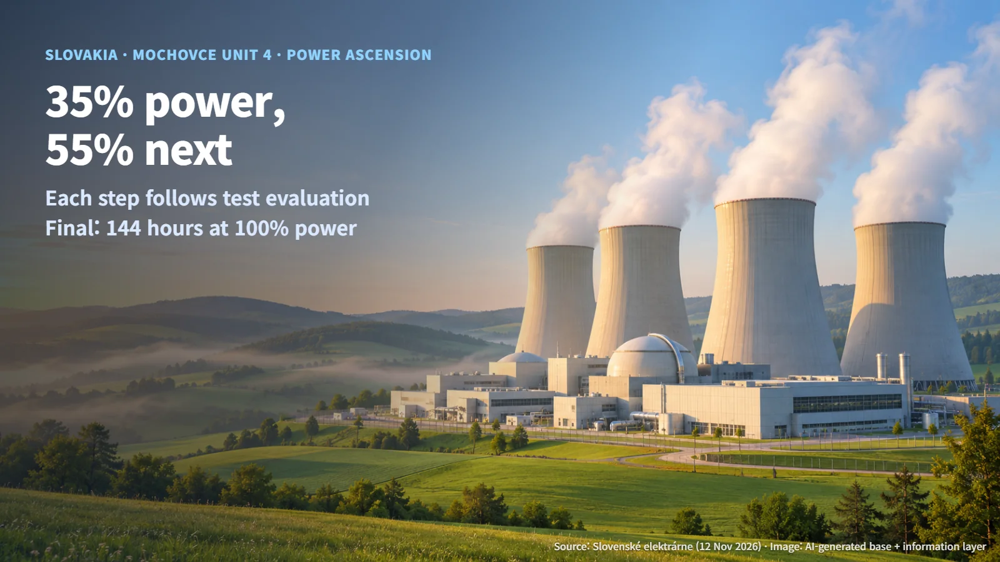
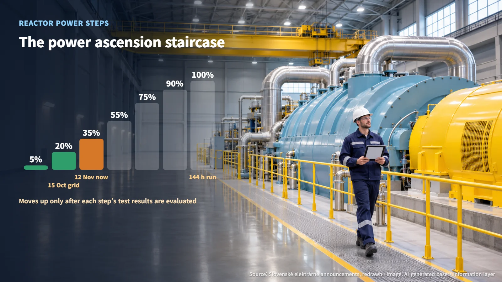
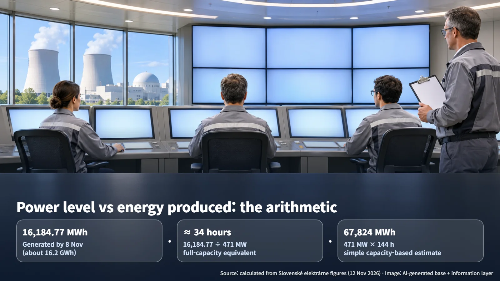

Slovakia · Mochovce · Power Ascension
From 35% to Full Power: How Mochovce 4 Moves Through Power Ascension Testing
Mochovce 4 reached 35% reactor power on 12 November. Each step to 55, 75, 90 and 100% follows test evaluation, ending with a 144-hour full-power demonstration run.
A new nuclear unit raises its output one step at a time, testing as it goes. Unit 4 of the Mochovce nuclear power plant in Slovakia is on those steps right now. Its operator, Slovenské elektrárne, announced that the unit's reactor reached 35% power at 2:35 a.m. on 12 November 2026. Why does a new reactor climb in stages, and what decides when it can move up to the next one?
Mochovce 4 is a VVER-440/V213 unit, a pressurized water reactor design, with an electrical capacity of 471 MW. Together with Unit 3 of the same design, the two units add up to 942 MW.

From 5% to 100%: The Steps of Power Ascension Testing
Power ascension testing is the commissioning phase in which operators raise reactor power and check how the reactor, turbine, generator and safety systems behave, both individually and together. The operator describes the steps as follows.
| Power level | What is checked at this step | |---|---| | 5% | Basic operating parameters | | 20% | Synchronizing the turbine generator with the grid | | 35, 55, 75, 90% | Operating characteristics and dynamic system tests | | 100% | Final tests and 144 hours of continuous operation |
(Source: adapted from Slovenské elektrárne announcements)
Grid synchronization at the 20% step is the procedure of matching the generator's operating conditions to the grid before connecting it. Unit 4 did this on 15 October, connecting one turbine generator to the grid at roughly 20% reactor power and supplying electricity for the first time.
The stepwise approach lets operators confirm plant behavior at lower power first and then use those results as the basis for widening the operating range. As power rises, thermal conditions, system responses and the conditions under which protection functions must act all shift together. The operator says it completes the tests at each step and evaluates the results before moving on. After the 35% tests, the next target is 55%, followed by 75%, 90% and 100%. The announcement gave no dates for reaching each level and no confirmed date for commercial operation. The timing of each step up is set by the test results at the current level and their evaluation.

"35% Power" and "16,184.77 MWh": What Each Number Tells Us
The news carries two numbers of very different kinds: 35% reactor power on 12 November, and cumulative generation of 16,184.77 MWh (about 16.2 GWh) as of 8 November.
Think of a car. The power percentage is the speedometer reading at this moment; cumulative generation is the distance traveled so far.
To get a sense of scale for the cumulative figure, here is a simple calculation based on installed capacity:
- 16,184.77 MWh ÷ 471 MW ≈ 34.4 hours
- In other words, everything generated so far equals about 34 hours of Unit 4 running at full rated capacity
Applying the same approach to the planned 144-hour full-power demonstration run:
- 471 MW × 144 h = 67,824 MWh (about 67.8 GWh)
- 67,824 MWh ÷ 16,184.77 MWh ≈ 4.2 times
By this calculation, a single six-day run at full power would produce about 4.2 times the electricity generated from first grid connection on 15 October through 8 November. The output so far comes from testing at low power levels; the unit's full generating capability is demonstrated at the 100% step. The roughly 3.5 million MWh of annual generation cited by the operator is a projection for full operation. Whether each step's tests have passed is confirmed separately, through the test result records for that step.

The Test Criteria the Regulator Had Re-Evaluated
Each increase in power comes with review by Slovakia's Nuclear Regulatory Authority, ÚJD SR.
The starting point is the commissioning permit. The public unofficial English translation of ÚJD SR Decision No. 229/2026 sets out two conditions to be met before commissioning began. Condition A1 covers tests related to the ex-core instrumentation (detectors that measure neutrons from outside the reactor core) and the neutron flux analyzer. Condition A2 requires submission of a Mode 6 checklist assessment against the limiting conditions for operation and technical specifications. Both required written acceptance by the regulator, and both were prerequisites for entering physics testing, in which the reactor runs at very low power so its nuclear characteristics can be measured.
The more revealing episode came next. On 18 September 2026, ÚJD SR consented to the power ascension testing phase, stating that its evaluation of the physics test results reports, on-site inspections and submitted documents showed the safety objectives and criteria had been met. In the process, it found that the criteria in some test programs did not match the latest source documents. The results were re-evaluated against the correct criteria and judged successful. For low-significance deficiencies and documentation gaps, the regulator required the submitted documents to be supplemented.
This case shows that confidence in a test result rests on agreement among the measured values, the acceptance criteria and the document versions. Each test should form an unbroken chain:
1. The revision number of the test program 2. The source design document the program is based on 3. The acceptance criterion derived from that design document 4. The actual measured result 5. The regulator's acceptance record
When a design document is revised, the acceptance criteria must follow, and the re-evaluation was the process of finding and fixing the misaligned link in that chain. With the before-and-after criteria and the reason for re-evaluation on record, it becomes quick to check whether the same issue carries over into later steps such as 55% and 75%.
The Final Gate: 144 Hours at Full Power and the Transition to Operation
The last step of power ascension testing is 144 hours, or six days, of continuous operation at 100% rated power. The operator plans to run this demonstration under design conditions to confirm the design parameters and the plant's overall functions.
The International Atomic Energy Agency's commissioning safety guide, SSG-28, recommends recording results, observations and any needed changes in individual test reports and in summary reports for each stage, and tracking any incomplete tests separately. The final step therefore looks at the 144-hour run records together with system-by-system handover documents and the closure status of any remaining tests and actions.
Public information confirms that the unit is currently in power ascension commissioning. The commercial operation date and the approval documents for the final stage have not been made public. The milestones to watch are, in order: completion of the 35% test evaluation and entry into the 55% step, the 75% and 90% steps that follow, and then the results of the 144-hour demonstration run and the closure of remaining actions.
A new reactor keeps climbing step by step even after it is connected to the grid because the measurements from each step become the evidence for the next one. When news arrives that Mochovce 4 has reached 55%, it can be read as a sign that the 35% test results have passed evaluation.